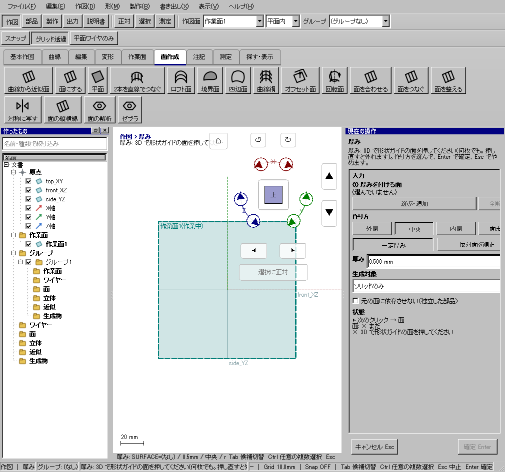

半径5mmの面を外形として1mmの厚みを付ける
半径5mmの面を外形として1mmの厚みを付ける
使う機能：面に厚みを付ける
元面を外形・内形・中央のどこに置くかを選びます。R5の元面を外形に保って内側へ1mmなら、新しい内面はR4です。
元面に対応する側を保持した肉厚部品ができる。独立出力では元面変更に追従しない。
1 準備 — 元の図形から作る
半径5mmの円筒状の面を作る。
まだ用意できていなければ、次の手順を先に行ってください。既にモデルがある場合も、例の座標・大きさ・面の向きを自分のモデルへ読み替えます。
- 高さ違いの円2本から円筒状の面を作る — 図形の作成から順に練習できます。
- 線・面・部品を取り違えずに選ぶ — 図形の作成から順に練習できます。
練習前にKCD2を別名保存します。数値の長さはmm、角度は度です。平面内のu/vと世界XYZを区別します。
2 使う道具を開く — 押す場所
- 部品 → 作成 → 厚み
別の入口：Ctrl+K → 面に厚みを付けるを検索 → 候補の用途を確認して開きます。別モードなら「全モードから探す」をオンにします。


この実画面は既存操作試験の一場面で、下の数値例の完成画像とは限りません。
3 操作手順 — 一つずつ進める
元面を選ぶ
「部品 → 作成 → 厚み」を開き、対象面を追加します。ソリッドの外観と厚みゼロの参照面を区別します。
画面で確認：右ペインの面欄に目的の名前が入ります。
元面をどちら側に残すか決める
元面を外形に保つなら内側、内形に保つなら外側、両側へ半分ずつなら中央を選びます。
画面で確認：円筒R5の例では内側1mmで外R5・内R4です。
厚みを入力する
厚み欄へ1mm、薄板例なら0.25mmなどを最後まで入力します。Enterまたは欄を離れて適用します。
画面で確認：入力途中の0.を直されないよう、数値が確定してから下見を見ます。
生成する物を選ぶ
ソリッドのみ、ワイヤーのみ、両方を指定します。形状を見たいだけで線出力を部品と取り違えないようにします。
画面で確認：ワイヤーのみでは体積はありません。
依存を決める
元面を後から消す独立部品が必要なら「元の面に依存させない」をオンにします。追従させる設計なら依存を残します。
画面で確認：独立化した結果は元の面の後の編集に追従しません。
計算結果を確認する
等角・断面で内外を見ます。自己交差などで一定厚みが作れない時は理由を読みます。補正面を使う場合は標本偏差と法線距離を確認します。
画面で確認：補正結果を厳密な一定厚みや全域誤差保証と見なしません。
確定して保存する
有効な下見を確認しEnterで確定します。元面を非表示にして生成物を単独で見てから保存します。
画面で確認：外側の見た目だけでなく内面と境界がつながることも確かめます。
4 設定する欄と数値
ボタン名・欄名と、今回使う値を対応させてください。項目が出ていない場合は作り方・モードが合っているか確認し、ペイン内をスクロールします。
| 見る欄・役割 | この例の設定と意味 |
|---|---|
| 内側 | 外形を保持 |
| 中央 | 半厚ずつ |
| 外側 | 内形を保持 |
| 出力 | ソリッド／ワイヤー／両方 |
| 独立化 | 元の面に依存させない |
選択の確認：役割欄の名前と3Dの強調を照合します。重なって拾いにくい時はTabで候補を替えます。全体を使う例では左一覧の要素名を選び、3Dの1辺選択と区別します。

5 確定して結果を確認
必要な入力と数値をそろえ、下見と状態欄を確認して、右ペインの作成・適用・確定ボタンを押します。Enter対応の道具はEnterでも確定できます。
元面に対応する側を保持した肉厚部品ができる。独立出力では元面変更に追従しない。
形を作る操作では、元と結果の名前を分けて一覧で確認し、必要に応じて元を一時非表示にします。表示だけの機能では形状や要素数を変えることが目的ではありません。
6 取消・やり直し・保存
Escで未確定の入力を取り消します。道具を終えるには選択（V）か別の道具へ切り替えます。確定済みの図面変更はCtrl+Z、やり直しはCtrl+Yです。
モデルの編集正本はKCD2、説明書の編集正本はKCIです。外部へ出力するだけの機能では、出力ファイルと編集元を両方残してください。
進めない場合 — 症状から戻る場所を探す
| 起きていること | 確認して直す場所 |
|---|---|
| 折返しや自己交差 | 厚みと最小曲率を確認。作れない条件を厚みができたと扱わない |
| 元面を消したい | 独立化してから依存を確認 |
この機能の入力条件：形状ガイドの面を1つ以上選んでください。
計算中は処理表示を見ます。失敗が出たら、対象・入力条件を変えずに何度も押すのでなく、案内にある対象と条件を確認します。
別の方式・条件で使う
元面を外形に保つ
まず主手順で入力の役割を確認し、この例の値と操作へ置き換えます。
この例の準備：半径5mmの円筒面
内側を選び厚み1mmです。法線が想定と逆の面では下見を確認します。円筒R5を外形に保つ例なら新しい内面R4です。
- 内側
- 厚み1mm
- 下見
- Enter
結果の見分け方：外径側R5、内径側R4

中央へ厚み
まず主手順で入力の役割を確認し、この例の値と操作へ置き換えます。
この例の準備：平面
中央0.5mmなら元面の両側へ0.25mmずつです。厚み0.5を両側へ各0.5と取り違えないでください。
- 中央
- 厚み0.5mm
- 下見
- Enter
結果の見分け方：面から両側0.25mm

元面を内形に保つ
まず主手順で入力の役割を確認し、この例の値と操作へ置き換えます。
この例の準備：半径5mmの円筒面
外側1mmなら元面を内形に保ちます。円筒R5の例では新外面R6です。面の表裏と下見の向きを確認します。
- 外側
- 厚み1mm
- 下見
- Enter
結果の見分け方：内径側R5、外径側R6

元面から独立
まず主手順で入力の役割を確認し、この例の値と操作へ置き換えます。
この例の準備：面
独立化のチェックを入れて確定します。後で元面を編集して追従する必要があるならチェックを外します。削除確認で依存関係を見分けます。
- 元の面への依存を外す
- 厚みと出力
- 下見
- Enter
結果の見分け方：元面変更に追従しない生成物

ワイヤー出力
まず主手順で入力の役割を確認し、この例の値と操作へ置き換えます。
この例の準備：面
ワイヤーのみを選びます。元面と新しい反対側の境界線を残す用途で、ソリッドが必要な出力には使えません。両方なら線と部品を別々に確認します。
- 出力ワイヤーのみ
- 厚み0.5mm
- 下見
- Enter
結果の見分け方：ソリッドを生成せず境界ワイヤーを残す

参考画面の出典と確認範囲
試験名：面に厚みを付けて立体にできる。試験全体の結果：passed。画像はコマンド呼出し直後で、入力待ち・下見の場合もあります。各段階の完成証拠ではありません。